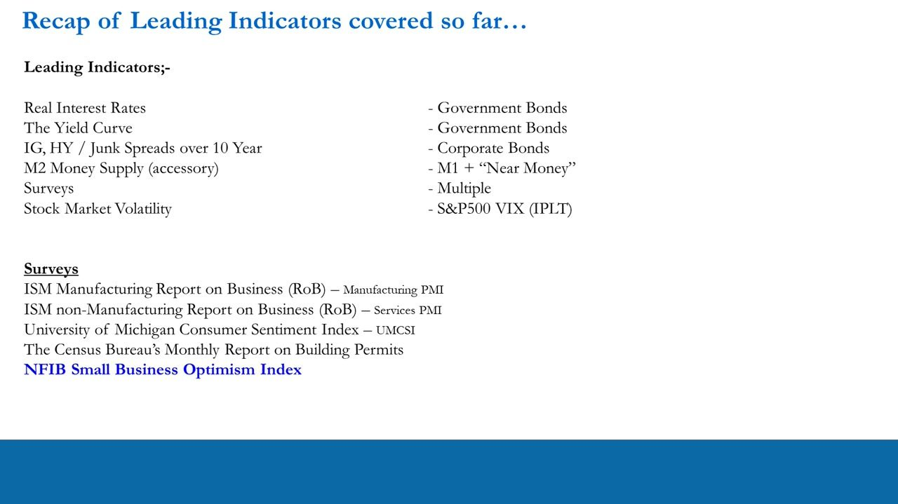
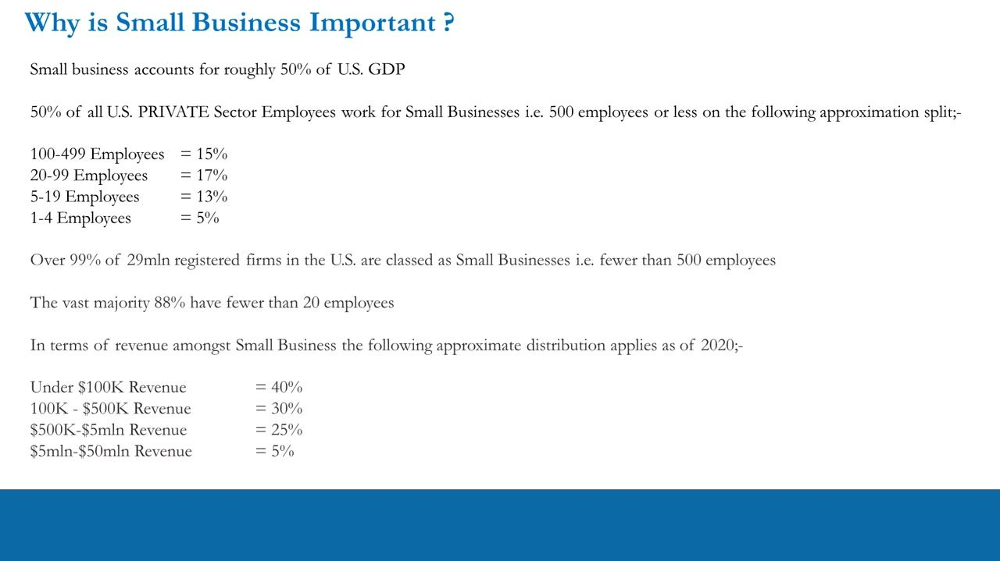
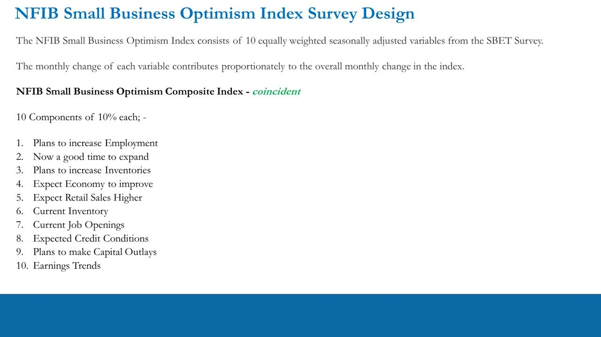
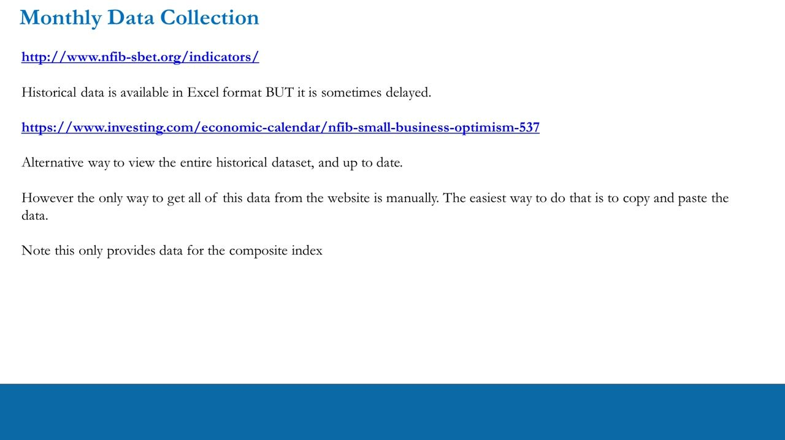
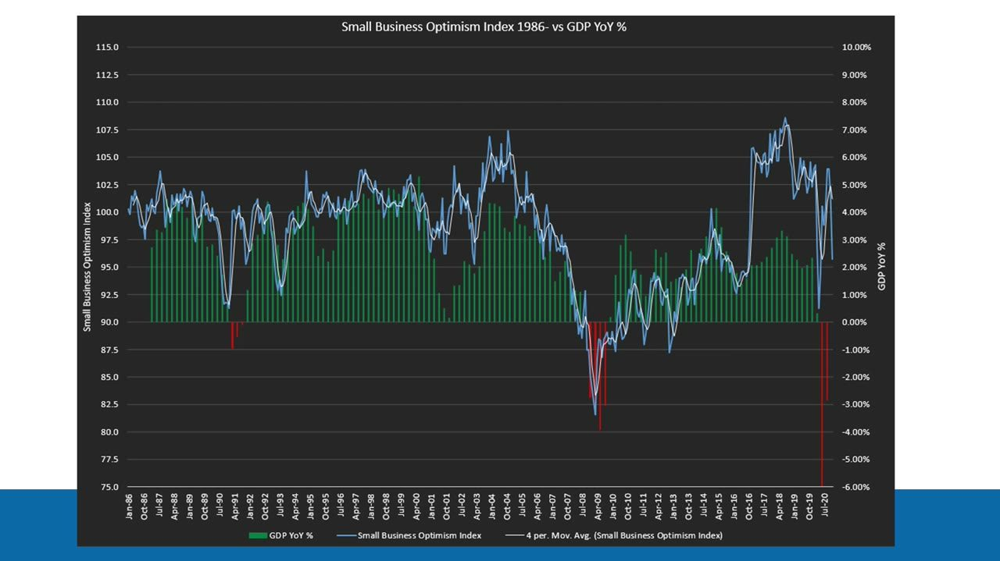
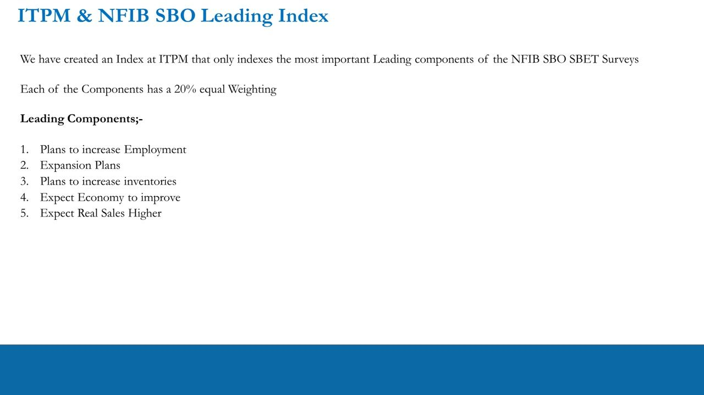
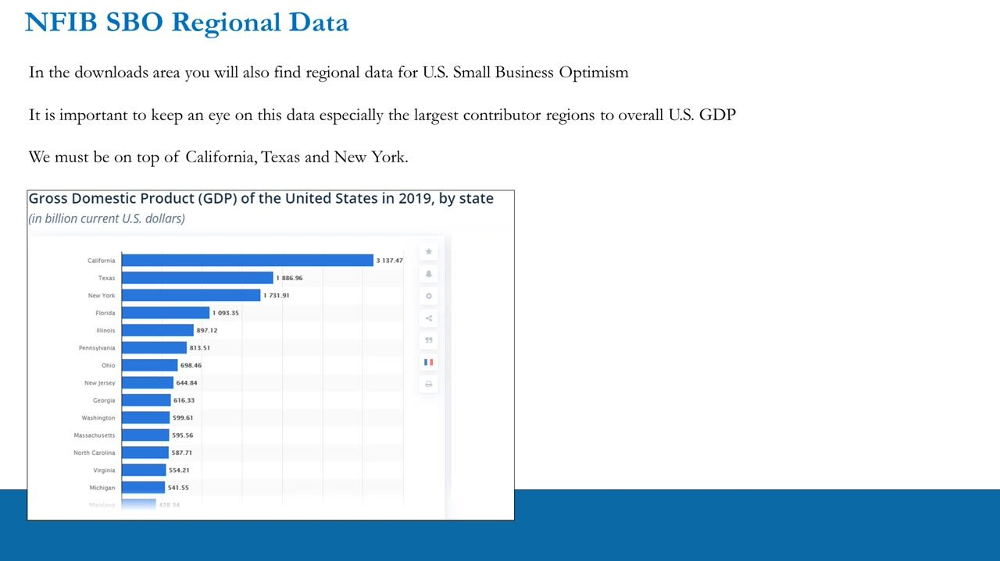
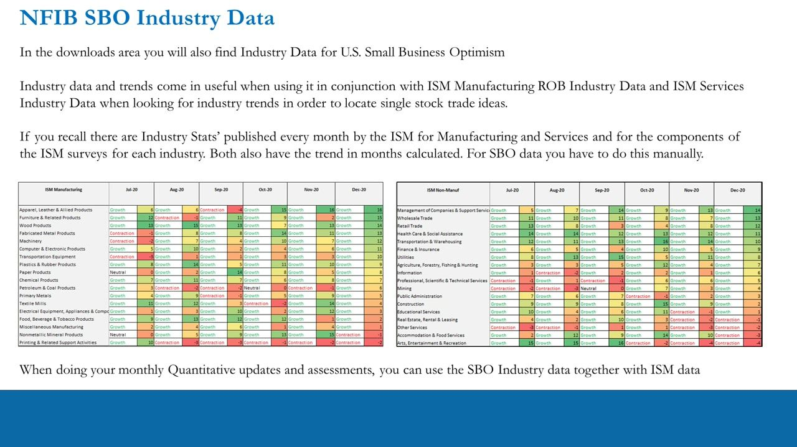
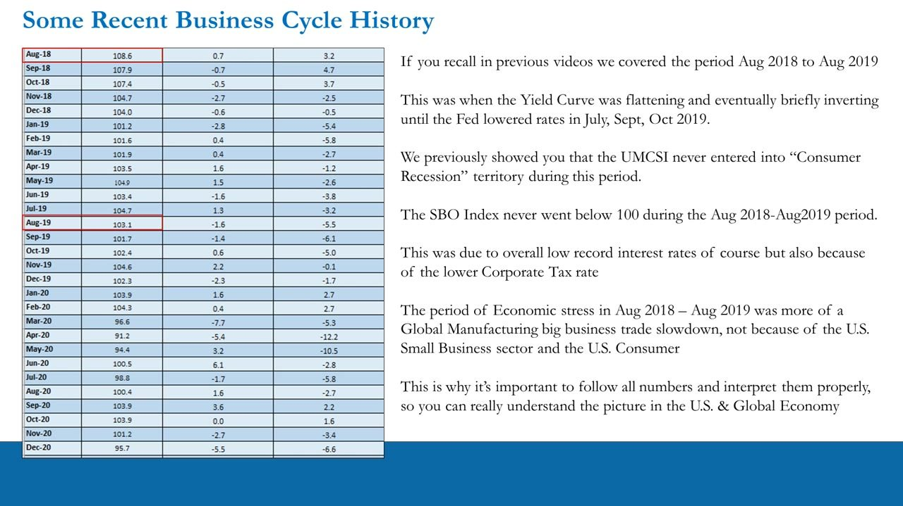
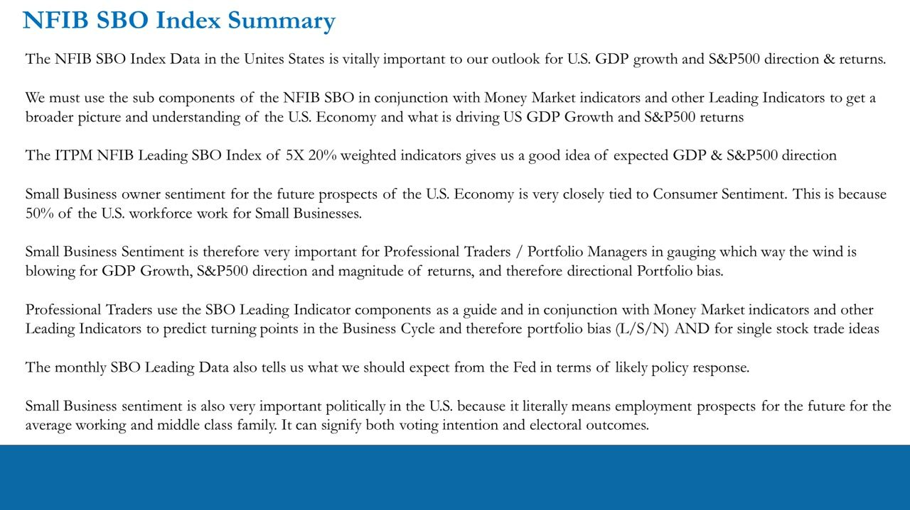

NFIB Small Business Optimism Index
Reading US small-business sentiment as a leading gauge of GDP and S&P 500 direction
The NFIB Small Business Optimism Index tracks the ~50% of the US economy that small business represents, and a bespoke leading sub-index of its forward-looking components signals GDP and S&P 500 direction ahead of the headline.
The gist
- Small business (under 500 employees) accounts for roughly 50% of US GDP and 50% of private-sector jobs, so its owners' optimism is a powerful gauge of GDP and S&P 500 direction.
- The NFIB Small Business Optimism Composite is built from 10 equally-weighted (10% each), seasonally adjusted survey variables, indexed to 100 in January 1986, and released the second Tuesday of each month for the prior month.
- The composite is classed a coincident indicator, but the 5 forward-looking components can be stripped out to build a leading index that reads GDP/S&P direction ahead.
- Read the composite against the 100 line: consistently above 100 = strong (S&P ~15-20%+ YoY); 95-100 = decent; below ~95 = a warning of slow/contracting GDP and weak-to-negative S&P.
- Regional (CA, TX, NY are the largest GDP contributors) and industry cuts pair with ISM manufacturing/services data for single-stock trade ideas.
- The SBO never fell below 100 during the Aug-2018 to Aug-2019 slowdown, confirming that was a big-business/manufacturing-trade slowdown, not a small-business/consumer one.
Where NFIB fits among the leading indicators
- Recap of leading indicators covered: Real Interest Rates and the Yield Curve (government bonds), IG/HY junk spreads over the 10-year (corporate bonds), M2 money supply (accessory), Surveys, and stock-market volatility (S&P 500 VIX).
- Survey leading indicators: ISM Manufacturing Report on Business (Manufacturing PMI), ISM non-Manufacturing Report on Business (Services PMI), University of Michigan Consumer Sentiment Index (UMCSI), the Census Bureau's Monthly Report on Building Permits, and the NFIB Small Business Optimism Index.
- NFIB is the National Federation of Independent Business's monthly Small Business Economic Trends (SBET) report — a monthly assessment of US small-business activity from mail surveys of a random sample of NFIB members.
This lesson adds the main US small-business survey to the leading-indicator toolkit, after the two ISM PMIs (big business) and the UMCSI (consumer).

Why small business matters
- Small business accounts for roughly 50% of US GDP.
- 50% of all US private-sector employees work for small businesses (500 employees or less); approximate split: 100-499 employees = 15%, 20-99 = 17%, 5-19 = 13%, 1-4 = 5%.
- Over 99% of the 29 million registered US firms are small businesses (fewer than 500 employees); the vast majority, 88%, have fewer than 20 employees.
- Revenue distribution (2020 approximation): under $100K = 40%, $100K-$500K = 30%, $500K-$5mln = 25%, $5mln-$50mln = 5%.
- Because big business and government/public spending make up the other ~50% of GDP, small business is at least as important as big business (and far more important than government) for US GDP growth and S&P 500 direction.
As owners grow optimistic they plan to hire, invest, raise inventories and potentially raise prices (inflation); as they turn pessimistic they plan layoffs, cut investment and hold or cut prices. The leading NFIB components can be used exactly like the ISM PMI components.

Survey design: the 10 composite components
- The Composite Index is 10 equally weighted, seasonally adjusted variables from the SBET survey; each variable's monthly change contributes proportionately (10% each) to the overall monthly change.
- The composite is a coincident index — it tells you what is going on now, not necessarily leading at the composite level.
- The 10 components: 1. Plans to increase Employment, 2. Now a good time to expand, 3. Plans to increase Inventories, 4. Expect Economy to improve, 5. Expect Retail/Real Sales Higher, 6. Current Inventory, 7. Current Job Openings, 8. Expected Credit Conditions, 9. Plans to make Capital Outlays, 10. Earnings Trends.
- Data goes back to January 1986, indexed to 100; released the second Tuesday of each month for the previous month.
The clue to which components lead is in the wording: 'plans' and 'expect' flag the forward-looking (leading) components.

Sourcing the data
- Free from NFIB at nfib-sbet.org / the Indicators section, in Excel format, but the download is sometimes delayed.
- Investing.com's economic calendar (nfib-small-business-optimism-537) holds the entire, up-to-date historical dataset, but only the composite index — and only obtainable manually (copy and paste).
- The actual SBET questionnaire is published on the NFIB site, asking owners about business type, the single most important problem facing them, whether it is a good time to expand, and expected business conditions six months out.
Anton stresses the ITPM principle of self-sufficiency: source and maintain this data yourself rather than relying on others.

The composite vs GDP (coincident)
- The composite (blue line, with a 4-period moving average in white) oscillates around the 100 reference line across 1986-2020.
- It co-moves with GDP YoY %: both fall together into the 2008-09 recession (GDP ~-4%, SBO trough ~81) and both collapse in 2020 (GDP YoY ~-6%).
- This co-movement is why economists class the aggregate composite as a coincident indicator.
The 100 line is the key threshold: consistently above 100 lines up with strong GDP and S&P YoY returns of roughly 15-20%+; 95-100 is decent (S&P roughly flat to +15%); below ~95 warns of flat-to-contracting GDP and negative S&P YoY. It is a best-average guide, not a rulebook.

The ITPM bespoke leading index
- ITPM builds a leading index from only the most important forward-looking (leading) components of the SBET survey.
- Each of the 5 components has a 20% equal weighting (the index is their average).
- The 5 leading components: 1. Plans to increase Employment, 2. Expansion Plans (Now a Good Time to Expand), 3. Plans to increase Inventories, 4. Expect Economy to improve, 5. Expect Real Sales Higher.
- Only these 5 are isolated because expansion plans already capture much of what 'expected credit conditions' and 'plans to make capital outlays' convey (overlap); you can add the other two to your own bespoke index if you prefer.
- The coincident components are Current Inventory, Current Job Openings and Earnings Trends.
Read the leading index's LEVEL and DIRECTION as the forward read on GDP and the S&P — it leads the coincident composite. This mirrors the PMI method: just as New Orders leads the ISM PMI, the forward-looking NFIB components lead the small-business composite. The leading sub-index (chart at 00:35:55) is far more volatile than the composite, with deep negative spikes coinciding with the 1990-91, 2008-09 and 2020 recessions.

Regional data
- The downloads area also holds regional US small-business optimism data.
- Watch the largest GDP-contributor regions especially: California ($3,137bn 2019 GDP), Texas ($1,887bn) and New York ($1,732bn).
- Regional SBO series (e.g. West South Central AR/LA/HI/OK/TX, and the Northeast) trace the same broad cycle as the national index around each region's own base.
Keeping an eye on the biggest state economies helps localise where small-business strength or weakness is concentrated.

Industry data
- The downloads area also holds industry data for US small-business optimism.
- Pair it with ISM Manufacturing and ISM Services industry data to find industry trends and single-stock trade ideas.
- Unlike ISM, NFIB does NOT compute the trend-in-months (how many months an industry has been in growth or contraction) — you must calculate that manually.
- Use the SBO industry data together with ISM data during monthly quantitative updates and assessments to spot sector turning points.

Recent business-cycle history (2016-2020)
- The index broke sharply higher after the Nov-2016 Trump election win (98.4) into Dec-2016 (105.8) and Jan-2017 (105.9), driven by the expected corporate tax cut (35% to 21%, Nov-2017).
- Peak SBO and ISM came in August 2018 (108.6).
- The SBO never went below 100 during the Aug-2018 to Aug-2019 period, when the yield curve was flattening and briefly inverting until the Fed cut rates in July, Sept and Oct 2019.
- That episode was a global manufacturing / big-business trade slowdown, not a US small-business or consumer slowdown — supported by low record interest rates and the lower corporate tax rate, and the UMCSI never entered 'Consumer Recession' territory either.
- COVID drop: Mar-2020 96.6 (-7.7 MoM), Apr-2020 91.2 (-5.4), before a rebound.
The takeaway: follow and interpret all the numbers together, because the SBO staying above 100 through 2018-19 correctly distinguished a big-business/trade slowdown from a broad small-business/consumer downturn.

Summary: how to use it
- NFIB SBO data is vitally important to the outlook for US GDP growth and S&P 500 direction and returns.
- Use the SBO sub-components alongside money-market and other leading indicators for a broader picture of what is driving US GDP and S&P returns.
- The ITPM NFIB Leading SBO Index (5 x 20%-weighted indicators) gives a good read on expected GDP and S&P direction.
- Small-business-owner sentiment is very closely tied to consumer sentiment, because ~50% of the US workforce works for small businesses.
- Traders use the SBO leading components to predict turning points in the business cycle and therefore portfolio bias (Long/Short/Neutral) and single-stock trade ideas; the data also signals likely Fed policy response.
- Small-business sentiment is politically important too — it signals future employment prospects for working and middle-class families, and can indicate voting intention and electoral outcomes.

Glossary
- NFIBNational Federation of Independent Business — the largest US small-business trade association; publishes the monthly Small Business Economic Trends (SBET) report.
- SBETSmall Business Economic Trends — the NFIB's monthly survey report of US small-business activity, from mail surveys of a random sample of members.
- Small Business Optimism Index (SBO/SBOI)The NFIB composite of 10 equally-weighted, seasonally adjusted survey variables, indexed to 100 in January 1986, released the second Tuesday of each month for the prior month.
- Small businessA firm with fewer than 500 employees; ~99% of the 29 million registered US firms, ~50% of GDP and ~50% of private-sector jobs.
- Coincident indicatorOne that tells you what is happening now (moves with the economy) rather than ahead of it — how economists class the aggregate SBO composite.
- Leading componentA forward-looking survey question (flagged by words like 'plans' or 'expect'); the ITPM leading index uses the 5 leading NFIB components, each weighted 20%.
- The 100 lineThe SBO's January-1986 base of 100, used as a zonal read: above 100 = strong (S&P ~15-20%+ YoY), 95-100 = decent, below ~95 = a warning of slow/contracting GDP and negative S&P.